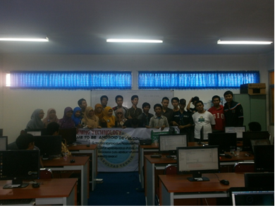

Training Technology Android Developer
Tanggal 25 tepatnya jam 8.00 lab informatika lantai 3 para panitia udah berkumpul untuk melaksanakan kegiatan pelatihan development android beberapa peserta sudah ada banyak yang hadir dan antusias mengikuti pelatihan android dan ada juga siswa non teknik yang mau mengikuti pelatihan tapi sayangnya dekan fakultas teknik pak rachmad tidak dapat hadir . akhirnya ketupel membuka pelaksanaan pelatihan android yang dimana di buka dengan pidato dan pesan yang singkat , 9 udah mulai beberapa peserta mulai menjalankan program aplikasi android yang di perintahkan oleh pemateri erik setiawan julive tapi hal yang terduga dari kami ternyata ada beberapa komputer yang tidak mau menjalankan program aplikasi android hal membuat panitia kewalahan karna bukan 1 atau 2 melainkan 5-6 juga lambat nya program yang di harapkan para panitia mengikuti pelatihan.
Akhirnya beberapa panitia mengalah tidak mengikuti pelatihan melainkan membantu para peserta yang ikut pelatihan agar bisa membuat program para selama pelatihan berlangsung hampir kebanyakan para peserta dan panitia kurang dapat mengikuti dan mengerti pelatihan yang diajarkan pemateri yang di karanakan bahasa pemrograman android masih baru dan rumit untuk di mengerti beberapa jam udah berlalu jam menujukkn jam 12 para panitia , peserta dan pemateri beristirahat makan bersama ada yang beberpa masih mengotak- atik programnya dan ada juga yang masih berinternetan untuk menyegarkan kembali pikiran jam 01.00 para peserta melanjutkan pelatihan , pelatihan yang dia jarkan kembali semakin berat banyak peserta yang bertanya dan mungkin karna beratnya ada beberpa panitia selain belajar untuk diri sendiri juga membantu para peserta beberpa panitia kelelahan dan tertidur di lab dan tidak terasa jam 3 pembalajaran di lanjutkan esok hari, tapi sebelumnya panitia tidak pulang karna masih ada evaluasi tentang kekurangan pelatihan dan ketidak siapan komputer dalam menjalankan program.
Tanggal 26 hari terakhir pelatihan program android beberapa panitia saya tanyakan beberapa diantaranya sakit perut dan peserta juga setelah mengikuti pelatihan di hari pertama dan hari terkahir sempat beberapa tidak hadir dalam pelatihan karna perutnya sakit , beberapa ada yang menduga karna makanan / minuman tapi panitia tidak mau pikir jauh berpikir positif dalam kejadian kemarin.pelatihan di lanjutkan beberapa udah tidak sabar dalam melanjutkan program yang mereka bikin kemarin sebelumnya pemateri melanjutkan pelatihanya keadaan hari ini lebih baik karna beberpa peserta fokus dalam pembuatan programnya tanpa terkendala karna programnya tidak mau berjalan di komputer .
Jam 12.00 waktu istrahat sama seperti sebelumnya para peserta , panitia dan pemateri makan berasama selagi waktu istirahat beberapa peserta dan panitia saling membicarakan program android yang di ajarkan pemateri tidak lah mudah. jam 01.00 pelatihan di mulai para peserta tetap semangad mengikuti pelatihan jam 03.00 pelatihan udah berakhir beberpa peserta berhasil membuat program aplikasi sederhana sebelum acara benar-benar berakhir para peserta di perilhatkan video motivasi tentang bagaimana seseorang yang mulai mimpinya dari bawah setelah itu di tutup dengan foto bersama dari peserta dan panitia juga pemateri ber foto bersama setelah acara selesai panitia mulai membersihkan lab dan evaluasi yang di tutup dengan penyiraman air dan tepung kepada ketuapelaksana syarif hidayaturrhaman.